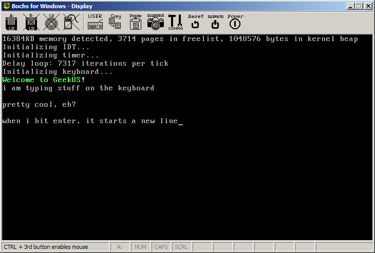

Due: Tuesday, October 3rd by 11:59
PM
In this assignment you will modify a simple version of
GeekOS to read characters typed at the keyboard and echo them to the
screen.
You can work on the project using either Windows or Linux. See
the Tools
Page for complete information on what software you will need.
Start by downloading project0.zip from the course web page.
This file is in the Files section in the "lecture1" folder. Unzip
the file somewhere convenient.
Start a bash shell (either using cygwin or a Linux terminal
window). Change directory into the "build" subdirectory and run
the command "make". This should compile and link the GeekOS
kernel image.
Edit the file "bochsrc.txt" using a text editor. You will need
to change two lines of this file:
romimage: file="C:\Program Files\Bochs-2.3.pre3/BIOS-bochs-latest", address=0x00000
vgaromimage: file="C:\Program Files\Bochs-2.3.pre3/VGABIOS-lgpl-latest"
Change these lines so that the file paths correspond to the
locations of the files "BIOS-bochs-latest" and "VGABIOS-lgpl-latest" on
the computer you're working on. These will generally be installed
as part of Bochs. For example, on a Linux system they might be
somewhere in the directory "/usr/share/bochs" (or a similarly-named
directory).
Once you have edited the "bochsrc.txt" file, you should be able to
run Bochs by typing the complete path to the bochs executable in your
bash window. For example, in the cygwin bash window on my Windows
machine, I typed
/cygdrive/c/Program\ Files/Bochs-2.3.pre3/bochs.exe
After choosing the "Begin simulation" option, you should see a
window that looks something like this:
Add code to the Main method
(in src/geekos/main.c) to read keys typed by the user and echo them to
the screen.
For example, here is a screenshot showing what the Bochs window
looks like after I've typed some text using the keyboard:

The functions and definitions for reading key presses are in the
header "include/geekos/keyboard.h".
The Keycode data type is
used to represent a single key press or release event. (You
should ignore key release events, since these correspond to the user
releasing the key rather than pressing it.) You will need to
decode key events to see if they correspond to ASCII characters.
Finding if a key is a release event:
Keycode code = ...
if ((code & KEY_RELEASE_FLAG) != 0) {
/* this is a key release event */
}
Finding if a key is a special (non-ASCII) character:
if ((code & KEY_SPECIAL_FLAG) != 0) {
/* this is a special key, not ASCII */
}
Finding the ASCII code of a key (once you have determined that it is
not a release event and not a special key):
int asciiCode = (code & 0xFF);
Once you have the ASCII code of a pressed key, you can print it to
the screen using the Print or Put_Char functions. These are
defined in the header "include/geekos/screen.h".
If the user presses the Enter key, the ASCII code will be 13 (the
character '\r'). To handle that keypress you should print a
newline character ('\n').
Make sure you can start compile GeekOS, execute it within Bochs,
press keys, and see the characters corresponding to those keys echoed
within the Bochs window.
For extra credit:
Here is a screenshot showing what the Bochs window should look like
after the keyboard-reading thread has completed:
Some hints:
"include/geekos/kthread.h" and
"src/geekos/kthread.c" contain the definitions and functions for kernel
threads.
Start_Kernel_Thread
is the function that starts a new kernel thread. You will want to
pass false for the detached
parameter, signifying that the parent will wait for the child thread to
exit.
The Join
function waits for a child thread to exit.
Submit a zip file containing your entire "project0" directory to the
My YCP Inbox as "Assignment 4". (Please type "make clean" in the
build directory before you create the zip file.)